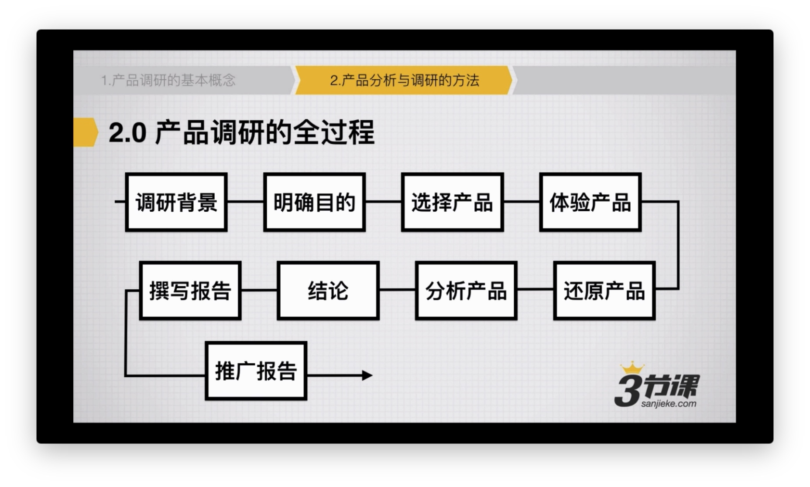

功能调研何产品调研有什么区别
- 共同点
- 目的性明确
- 注重底层逻辑流程
- 用户需求如何被满足
- 不同点
- 功能调研
- 重业务流程
- 交互体验
- 突出亮点
- 产品调研
- 重功能迭代过程
- 重产品结构
- 运营逻辑
- 功能调研
选定目标产品
- 功能点调研：关注主流产品的相关模块
- 电商支付流程：京东，淘宝
- 社交网站注册流程：微信，qq，陌陌
- 完整产品调研：关注龙头产品，1-2 个新晋热门产品
- 了解外卖服务流程：美团外卖，饿了么
- 记帐类产品的核心流程：挖财，网易有钱
功能点调研
明确调研目的
| 调研的类型 | 目的 |
|---|---|
| 竞争对手上了新功能 | 能不能抄？要不要抄？调研后给播送 作决策依据 |
| 准备上的新功能，先看看别人怎么做的 | 哪个好？怎么抄？缩短产品设计的过程 |
| 以自我成长学习为目的 | 为什么这么做？判断自己的分析能力和判断力 |
数据表现
- 覆盖率
- 发布量
- 成交量
对于自己的产品来说的意义
- 要不要抄：和用户群是否符合？数据情况如何
- 能不能抄：是否有技术壁垒？是否有特殊门槛
- 结论是什么
核心问题
- 新的功能点有哪些？最关键（你准备调研）的是哪个
- 用户、需求、场景是否被满足了
- 底层逻辑、产品流程大概是什么样
- 产品的亮点是什么？为什么
- 数据表现
功能调研的误区
- 没结论
- 不愿意做
- 杂
- 费要提改进意见
针对产品的调研
- 了解产品功能，看产品的表现
- 通过迭代的过程，看产品实现的逻辑
- 透过一个产品，看穿一个行业
产品调研全过程流程图
digraph p2{
//图设置
rankdir = TB
node [ shape="record", width=.1, height=.1];
node [fontname = "Verdana", fontsize = 11, color="black", shape="record"];
edge [fontname = "Verdana", fontsize = 9, color="black", style="solid", arrowsize = 0.6];
调研背景 -> 明确目的
start -> inim
｝

针对独立产品的调研怎么做
- 用户：有哪些类型的用户
- 场景：不同类型的用户，分别在什么场景下会使用
- 需求：产品满足了哪些需求
产品逻辑
- 用户的流向：都有哪些用户，怎么发生联系的
- 数据的流向：产生的数据流是如何运转的
- 汇合点：用户、数据的在哪个关键页面回合
- 关键路径：用户操作的关键功能、页面是什么
通过迭代路径找到关键点
产品的表现如何
- 数据表现：使用数据、排名数据、评分数据
- 用户表现：用户点评、产品点评
多个相同的产品调研
- 找相同 找不同
- 关键功能的差异
出结论
- 相比优点、缺点、亮点
- 如果要抄，抄什么？怎么抄？
明确目的比功能全面更重要
- 目标：用来做什么？期望
- 成本：如果自己做，能用 是如何 的？
- 关联性：第三方产品和你完成目标之间的关联
- 其他：价格、服务、会不会倒闭等
深度体验产品
- 体验产品的过程中，重点关注用户、使用场景需求
- 把用户、场景、需求明确下来 ，尽可能找到对应的用户做简单的访谈
- 找出用户视角的产品实现逻辑
用户是谁？使用场景，满足的需求
还原产品
- 重点关注解决用户需求的过程
- 还原产品，最终要关注的是流程，而非界面
核心流程，核心页面，产品结构
分析产品
- 从产品的视角来分析 ，而不是自我感觉
- 重点关注产品表现，而非界面
- 不要做看似专业且复杂的分析，通常用户流程终点使用过程，数据已经表现出来了
关键数据，产品表现，数据猜测
产品迭代、运营分析
- 现在很重要，但发展过程更重要
- 从产品迭代中可以发现别人踩过的坑
- 从运营过程中可以发现产品的表现和重要程度
常见的迭代、运营调研工具
- Appstroe: 了解一个产品的基本概况、评价
- appannie/应用雷达/七麦：了解更新历史、排名、评价、数据
- google 新闻：按实践段搜索产品的新闻稿，了解运营简单过程
- 淘宝等：如果有会员消费，能看到折扣比例，判断热门程度
- 手机中国 手机乐园：下载安装安卓版的历史版本
横向比较同类产品
- 与同类产品相比，分别处于什么位置
- 找到产品之间的核心差异点
- 总结分析同类产品的优缺点
竞争格局，产品差异，总结分析
调研分析报告
- 清晰明确的结论
- 逻辑清晰的表达调研的过程和结论之间的关联
- 抓重点，说正事
- 调研报告不带个人色彩，以中立的角度来描述
- 可读性强，照顾读者
推广报告
- 内部分享：再公司内部建立起分享会
- 外部分享：在第三方平台表达出来
产品调研 的误区
- 产品调研 不等于 行业调研
- 产品调研 不等于 产品体验报告
- 不要用看起来很高深的分析证明自己的正确性
- 二三手数据不能证明你正确
- 非得加改进建议
- 大而全
- 强烈的个人倾向